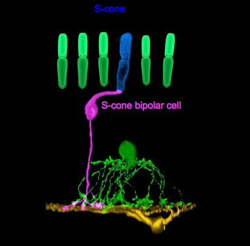
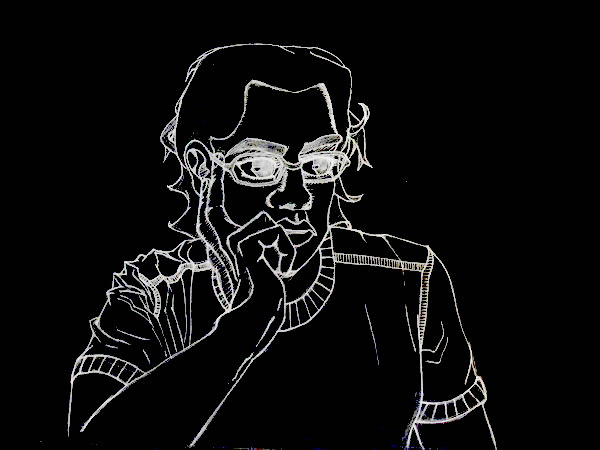
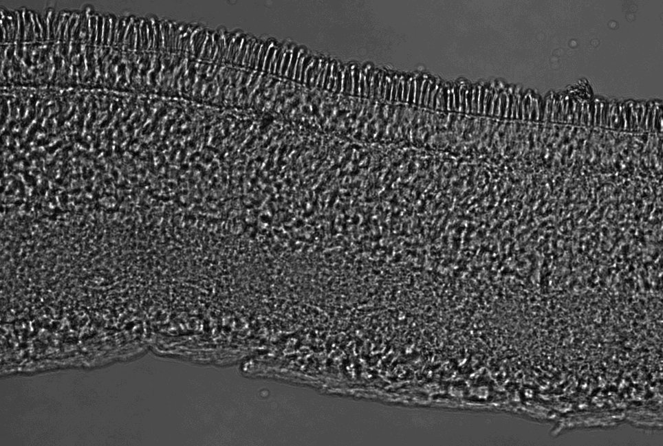

Assembly of retinal circuits involved in the perception of blue
Juan Angueyra, Vincent Kunze, Wei Li
Retinal Neurophysiology Section
National Eye Institute, National Institutes of Health
Bethesda, MD
Conflicts of interest: None
Assembly of retinal circuits involved in the perception of blue

Juan Angueyra, Vincent Kunze, Wei Li
Retinal Neurophysiology Section
National Eye Institute, National Institutes of Health
Bethesda, MD
Conflicts of interest: None
Learn about what I do in science
How do two cells in the retina find each other to exchange information?
Learn something about me
Personal journey into science
IDENTITY
Perception of light starts in the retina
thin layer that lines the eye
part of the nervous system

Perception of light starts in the retina
thin layer that lines the eye
part of the nervous system
Retina is a layered structure.
Light detection starts in photoreceptor layer
Perception of color starts at cone photoreceptors
Perception of light starts in the retina
thin layer that lines the eye
part of the nervous system
Retina is a layered structure.
Light detection starts in photoreceptor layer
Perception of color starts at cone photoreceptors

Two types of cone photoreceptors (in most mammals)
M-cone (90 - 95%) (more sensitive to green light)
S-cone (5 - 10%) (more sensitive to blue light)
Mammals that lack S-cones are unable to make distinctions between blue-green
Three types of cone photoreceptors in humans
L-cone (more sensitive to red light)
Humans that lack S-cones are unable to make distinctions between blue-yellow
Two types of cone photoreceptors (in most mammals)
M-cone (90 - 95%) (more sensitive to green light)
S-cone (5 - 10%) (more sensitive to blue light)
Mammals that lack S-cones are unable to make distinctions between blue-green
Three types of cone photoreceptors in humans
L-cone (more sensitive to red light)
Humans that lack S-cones are unable to make distinctions between blue-yellow

Ictidomys tridecemlineatus
13-lined ground squirrel
Two types of cone photoreceptors (in most mammals)
M-cone (90 - 95%) (more sensitive to green light)
S-cone (5 - 10%) (more sensitive to blue light)
Mammals that lack S-cones are unable to make distinctions between blue-green
Three types of cone photoreceptors in humans
L-cone (more sensitive to red light)
Humans that lack S-cones are unable to make distinctions between blue-yellow

Ictidomys tridecemlineatus
13-lined ground squirrel
Hypothesis:
The S-cone bipolar connects to cones that are more sensitive to blue light
Key datum contradicts this hypothesis:
Connection between S-cone and S-cone bipolar is established before cones are able to detect light
Hypothesis:
The S-cone bipolar connects to cones that are more sensitive to blue light
Alternate hypothesis:
S-cone bipolar is able to distinguish cone identity
What defines S-cone identity?
After finishing medical school (Universidad Nacional de Colombia),
I worked in a lab in Cape Cod for several summers.
Then moved to Seattle for graduate School (University of Washington).
Recently I moved to Washington D.C. to work as a postdoc

After a decade in the U.S.

Identity (paradigm)
Fluid
Context dependent
Ambiguous
Complex
Approaching a definition of identity requires asking not only a lot questions, but also the right questions
- Structure
- Outer segment
- Inner segment
- Ribbon synapse
- Function
- light detection
- information relay
- Context
- Cells receive information
- Support cells (and most of their functions)
- Genes
- Genes involved in light detection
- Genes involved in relaying information
Could we identify all the genes expressed by S-cones and compare them to the genes expressed by M-cones? (i.e. Can we ask all the questions?)
- Isolated individual cones
- Made S-cones glow
- Collected small groups of S-cones and small groups of M-cones (manually)
- Isolated mRNA and sequenced it
- Identified > 2000 genes in each group
- Compared expression of each gene according to cone type

Devise ways to test if some of these genes disrupt the ability of the S-cone bipolar to find S-cones
Devise ways to test if some of these genes disrupt the ability of the S-cone bipolar to find S-cones